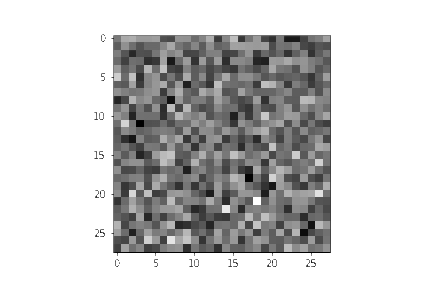

PPT 24–25
訓練與使用模型
訓練：模型先從大量例子學習模式。使用：我們提供要求，模型運用已學模式及這次資料回答。
客群改了，回答有沒有配合？
在原奶茶店對話輸入：
PPT 26–27
一個詞，一定是一個 token 嗎？
模型把文字切成小片段，這些片段叫token，不一定等於一個詞。
原句：我喜歡喝奶茶。
[我] [喜] [歡] [喝] [奶] [茶] [。]
依中文BERT分詞規則及詞表整理，不計額外特殊token。不是Gemini實測，也不代表所有模型。
PPT 28–29
背景會影響接續內容
上下文：前面提供的內容，會影響模型接下來生成甚麼。常見文字生成會把新片段接到已有內容，再繼續生成。
Prompt A：先在新對話測試
Prompt B：加入自己的虛構背景
另開新對話測試B。保留實際結果；沒有配合背景也照實記錄。
輸出差異讓我們觀察行為，不能直接看見模型內部的token機率或訓練過程。
PPT 30–31
同一 prompt，再試一次
同一段內容可能有不同合理接法，所以回答不一定每次相同。
把剛才的Prompt A原封不動放入另一個新對話，送出一次。
PPT 32–36
從雜訊形成圖像
擴散是其中一類方法：模型利用已學模式，從雜訊經多步去噪形成圖像。

Hugging Face教學動畫的第0、150、199影格，依播放順序展示。這是無文字條件的衣物生成示例，不是奶茶工具的內部記錄。原動畫與方法
虛構的珍珠奶茶
Task是生成圖片，Context是教學用及虛構，Constraints是桌面、杯子、飲品及不能出現的內容。這次不必指定Role。
圖片預覽不會儲存。請保留原檔，並在紀錄中註明圖片位置。
後備例子：AI生成奶茶圖
2026-10-13，Codex內的圖像生成工具，使用上述prompt。不是學生帳戶實測。若借用此圖，請把紀錄來源選為「教師示例」。
圖像生成流程排序
個人交付
留下自己的理解與實操紀錄
核對已填的prompt、實際輸出、觀察及理由。工具未成功時照實記錄「未取得輸出」，不把概念理解與操作成功混為一談。
這份文字紀錄沒有附上圖片原檔。交付時請按課堂方式一併提供圖片或截圖。